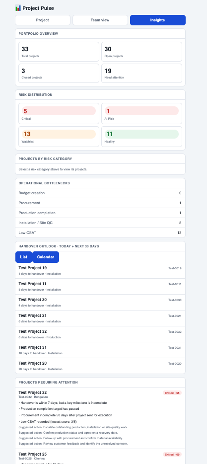
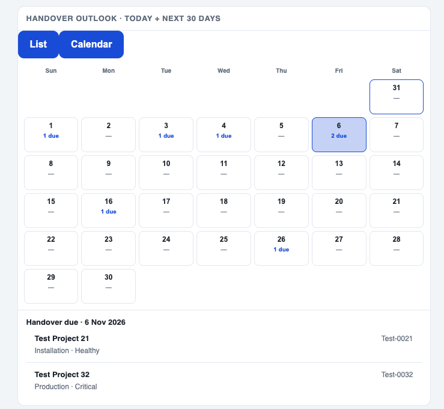

PROFESSIONAL IMPLEMENTATION + INDEPENDENT PROTOTYPE
Project Pulse: making project delivery easier to see and act on.
A project monitoring system designed to bring fragmented operational updates into a clearer view of project status, bottlenecks and issues that need attention.
01 / THE PROBLEM
Project information existed. Visibility was the challenge.
In a high-volume home interiors operation, project information is created across multiple stages and teams. The challenge is bringing those updates together so people can quickly understand where a project stands, what is holding it back and what needs attention.
The operational challenge
Project updates and milestone details needed to be brought together to answer routine questions. Teams needed a quicker way to review project status and identify exceptions.
The design objective
Create a practical monitoring experience that makes project progress easier to interpret and helps users move from status updates to action.
02 / THE ORIGINAL SYSTEM
A lightweight solution built around the existing workflow.
The original professional implementation used Smartsheet as the operational data source, an hourly sync into Google Sheets and a Google Apps Script web app for project lookup and monitoring.
Project lookup
Users could search by Client ID and review a consolidated project summary, including stage, phase details, key dates and relevant flags.
Operational context
The interface reduced the need to navigate multiple underlying sheets and trackers to understand an individual project's status.
03 / THE ENHANCED PROTOTYPE
From project lookup to portfolio-level insight.
I extended the original idea into an independent portfolio demonstration. It uses synthetic data and explores how project-level information can be turned into a more actionable overview.
Portfolio overview
Quick counts of total, open and closed projects, along with projects requiring attention.
Risk distribution
Rule-based categories that help users identify projects needing different levels of review.
Operational bottlenecks
Visibility into budget, procurement, production, installation and customer satisfaction signals.
Handover outlook
A rolling 30-day list and calendar to inspect expected handovers by date.
Interactive filters
Select a risk category to inspect the associated projects and their details.
Suggested actions
Project-level reasons and suggested next steps provide context behind risk signals.

Portfolio Insights: overview, risk distribution, operational bottlenecks and handover outlook. All displayed records are synthetic.

Handover calendar: select a date to inspect the projects expected to be handed over.
04 / MY CONTRIBUTION
Solving an operational problem with practical technology.
What the work involved
Framing the operational visibility problem, structuring the information, translating business rules into useful project signals and shaping a simple interface for project monitoring.
What it demonstrates
My focus is on connecting operational needs, data and process logic. The technology supports the solution. The underlying objective is better visibility, prioritisation and follow-through.
EXPLORE THE PROJECT
See the system in action.
Explore the standalone demonstration and interact with the portfolio overview, risk filters and handover calendar.